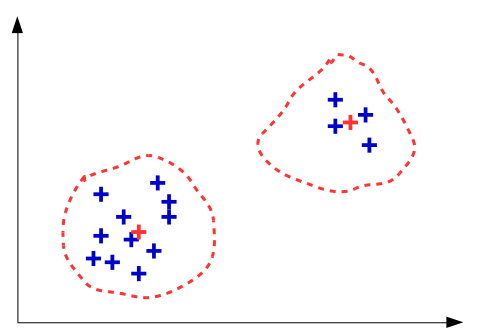

Etude théorique de k-means¶
Le principe de l’algorithme est le suivant : étant donné une population d’individus, que l’on apellera ici observations, l’on veut déterminer k observations moyennes qui reflètent bien l’ensemble des observations.
Ces observations moyennes, que l’on apelle centroids, ne sont pas nécessairement des observations qui proviennent de la population initiale, mais peuvent être construites au cours de l’algorithme.
Principales étapes de l’algorithme :¶
- Initialisation de k groupes : k observations distinctes de la population sont choisis aléaoirement pour constituer les centroids.
- Affectation des observations au groupe du centroid dont elles sont le plus proche.
- Calcul des nouveaux centroids : ce sont les barycentres des groupes nouvellement formés.
Les étapes 2 et 3 de l’algorithme sont répétées en boucle jusqu’à ce que l’une des deux conditions d’arrêt soit respectée : aucune observation ne change de centroid lors de le phase d’affectation, ou le nombre d’itérations de la boucle dépasse un seuil fixé.
Exemple de déroulement de kmeans (en deux dimensions) :¶
Considérons la population suivante :
Nous voulons séparer ces observations en deux groupe, nous choisissons donc de lancer l’algorithme kmeans avec k=2.
Initialisation¶
Phase d’initialisation ; nous choississons aléatoirement deux observations dans la population pour initialiser les centroids :
Itération 1¶
Phase d’affectation ; chaque observation de la population est affectée à un nouveau centroid : celui qui est le plus proche de cette dernière :
Phase de calcul ; chaque centroids est redéfini comme étant le barycentre de l’ensemble des observations du groupe :
Des observations ont changée de centroid, la condition d’arrêt n’est pas validé, on passe donc à l’itération 2.
Itération 2¶
Phase d’affectation ; chaque observation de la population est affectée à un nouveau centroid :
Phase de calcul ; chaque centroids est redéfini comme étant le barycentre de l’ensemble des observations du groupe :
Des observations ont changée de centroid, la condition d’arrêt n’est pas validé, on passe donc à l’itération 2.
Itération 3¶
Phase d’affectation ; chaque observation de la population est affectée à un nouveau centroid :
Phase de calcul ; chaque centroids est redéfini comme étant le barycentre de l’ensemble des observations du groupe :
Aucune observation n’a changée de centroid. La condition d’arrêt est donc validée. Les centroids finaux sont donc ceux de la dernière itération :